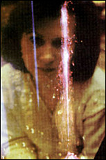

|
 A volunteer tries to use psychokinesis to alter the shape of a fountain. 5: Methods of Testing Twenty years ago, an undergraduate student approached Robert Jahn, then a professor of engineering and aerospace studies. The student asked him to supervise an experiment designed to determine whether the mind could affect the output of a machine. The machine produced a string of random binary events ones and zeroes that operators could observe as a jagged line winding across a display screen. Research participants tried to move that line up or down using psychokinesis, the power of their intentions. As Jahn discovered, that's exactly what they did. In 1979, Jahn established the Princeton Engineering Anomalies Research program in New Jersey to continue studying PK. The PEAR lab conducts an array of experiments designed to reveal the possible effects of human consciousness on machines. Jahn, now dean of engineering and applied sciences, and Brenda Dunne, a developmental psychologist and PEAR's laboratory manager, believe their results cannot be attributed to chance. They say that if we concede that PK exists, then we also must assume that humanity developed it for a reason. "PK should be useful, if it's like our other abilities, or it wouldn't have evolved," said Dr. Richard Broughton, of the Institute of Parapsychology in Durham, North Carolina. Looking at the data from micro-PK experiments, Broughton said he could sum up PK's usefulness in one word: luck. Using PK can, in one sense, bring us luck. Broughton is not suggesting anything so specific as being able to make slot machines or lottery tickets work in our favor, but we may be able to get life's chances to break in our favor more than nature would predict. Broughton said, "We think there's more to luck than people's selective memory of when things worked and when they didn't. We'll look at luck as an ecologically valid assumption of PK, a way to look at people's ordinary lives." Broughton's experiments involve testing generally successful individuals to find if they are better able to assert their control. Physicist Ed May of the Cognitive Sciences Laboratory in Palo Alto, California, has suggested an alternative to the luck hypothesis. He said PK phenomena can be explained by intuition. May, whose web site (http://www.jsasoc.com/~csl/aircom.html) details his involvement in CIA remote viewing experiments, says now that there's no evidence that the human mind is changing the output of REG machines. May's theory, which Broughton calls "the fly in the ointment" of micro-PK theories, is that during experiments, operators actually see the future. "Think of a random number generator," said Broughton. "Operators hit a button and 200 trials come down the pike -- a random string of binary events, ones and zeroes. But suppose you looked down that pike and saw when a run of 100 ones was coming and hit the button then. That's not PK; it's precognition." May calls his theory "decision augmentation theory," or DAT for short. Broughton said, "We sometimes call it 'DAT old black magic.'" May has outlined experiments that would falsify the data augmentation model. Those experiments involve random-event experiments, allowing Broughton and others to test DAT (intuition) against classic influence models (PK). In one experiment Broughton conducted, operators don't know whether the machine will generate 100 binary events or 10,000. If influence models prove true, the experiment should generate larger statistical results with a larger number of trials. If the precognitive model (DAT) is correct, the statistical results should be equal regardless of the sequence length. "We have a mass of data convincing us an effect is happening, so we're busy trying to understand," Broughton said. "It's an exciting time right now in the field." Dr. Dean Radin is director of the Consciousness Research Division of the Harry Reid Center for Environmental Studies at the University of Las Vegas, Nevada. Early indications from his experiments may weaken the DAT model. He placed portable random event generating machines with no feedback display at major events, such as the Academy Awards, the Super Bowl, and the O. J. Simpson trial, to see if the thoughts of many people concentrating in harmony could affect the physical world. The audiences were unwitting participants and never saw the machines. Radin found, however, that their combined intentions affected the machine's normally random output. Since the experiment offered no opportunity for precognition, a requirement for the DAT model, the recorded effects would seem to indicate psychokinetic powers at work. Jahn and Dunne undertook similar experiments, in one instance placing a portable REG at a theatrical event. Again, there was no chance for attendees to interact with the machine. Like a barometer, the portable REG was put in place to measure the environment -- in this case, the psychic environment -- and note any changes that a group consciousness might cause to its data. The researchers found "anomalous outputs" in the binary data produced by the machine. "Participants had told us that during two or three parts of the performance people would be in greater resonance," said Dunne. "Because the performance ran eight times, we were able to show a strong correlation." PEAR calculated the odds against the findings being attributable to chance expectations at 2x10 to the 4th power. "Intention is only part of it," Dunne adds. "When a group is more like a coherent system, a unified organism, the random processes in the group's environment are made less chaotic." Copyright (c) 1997 Llewellyn Worldwide, Ltd. http://www.llewellyn.com
|